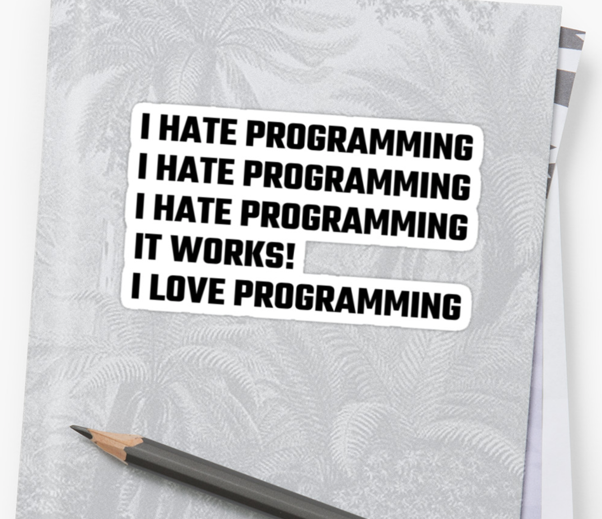

I was wondering if there was a reason why certain assignments are open on a certain day of the week and not all at once - such as videos and assignments opening on a Thursday and journals on a Friday?
There is. First, I want you all to focus on the discussions and design principles examples in the beginning of the week. But it also gives me time to grade and give feedback before the next assignment is open, which is very important to me.
It was really helpful how the examples could be carried over into the assignment… I’ve had some classes where that’s not the case, making the assignment harder.
The goal, of course, is to help you learn, not to make you suffer.
I learned that things will work if you just read the instructions.
And if I remember correctly, you also learned that coming to my office hours can be quite helpful.
I coded my first actual website! The only prior coding experience I’ve had was extremely stressful and the instructor made everyone feel like a failure. Once I started on the restaurant menu assignment, I felt in control and I knew what to do thanks to the videos and instructions. Now after its done, I feel so proud of myself and relieved that this experience was a positive one!
I too am proud of you and relieved that your experience was positive!
I had a lot of fun with this project and I’m excited to learn and practice more with HTML.
A lot of you wrote something similar. You’re my people!
This week I did find the restaurant menu assignment challenging, as coding is very new to me. I’m hoping I will feel more confident coding as the weeks progress.
You will. It is supposed to be challenging, of course, but I hope it wasn’t stressful. I don’t want you stressed or frustrated with the class. When there’s stress and frustration, there is no learning. If it becomes too challenging, please seek help from me or your peers.
This week was a lot of fun. It was really cool that we actually started coding on HTML. It was quite satisfying to complete the restaurant menu and see it appear on the webpage.
It is quite satisfying to have your webpage published.
Having the quizzes at the end of each lesson video motivated me to pay more attention to what you were teaching and also helped me understand the parts that were unclear to me. The common mistakes was really helpful to me and helped me finish my restaurant menu quicker with fewer mistakes. HTML seems a lot easier after going through little pieces of information at a time.
Looks like the class is working well for you. I’m glad to know.
I will have to switch to another simple text editor that is not Brackets, would Sublime be an acceptable platform to use?
Sublime is great, but it’s definitely more expensive than I’d be comfortable with suggesting to my students. There are some free editors that are great. (I use the free version of BBEdit on my Mac. The paid version is not that expensive, but I just don’t need any of its extra features.)
I enjoy having different groups each week because you get to meet new people.
It’s even better in person! But that’s something else to look for in the fall. I know I look forward to meeting all my students I haven’t met in person.
I found that it is quite difficult to coordinate with groups for the examples assignment. It is difficult to equally split up the work, and to ensure that each individual is on the same page in terms of the specifications/instructions.
It’s far from great, I know. But remember, we’re still dealing with emergency online environment because of the pandemic. This class should not be fully online. The HTML/CSS part of it works somewhat well online, although I miss the natural peer‑collaboration that I see in labs, but the discussions work much better in person, of course. Last spring, however, I decided that online discussion would be more beneficial than no discussion. And I still think I made the right decision then, so I kept it. (I can’t believe it’s already my third time teaching this class in the pandemic.)
Using the discussion thread to see other students had questions and everyone was offering solutions was great and helpful.
Please keep using it. I’ve been redirecting questions in my inbox to the virtual collaboration board.
Centered headings are generally not a good idea on webpages. Because we read left to right it makes most sense to have headings left-aligned, especially when it precedes paragraphs of text.
Please!
Titles don’t need to be centered to look good.
They absolutely don’t!
Although it is important to design and think outside of the box, I think it is even more important to keep these design principles (consistency, similarity, alignment, and proximity) in mind when designing anything in order to create the best outcome.
It is very important to think inside the box too.
I find it interesting how elements closer together are seen as more alike just because of the closeness in distance vs the elements farther apart.
You sound surprised…
The soundboard was probably my favorite example. Although it can still be overwhelming to look at the number of inputs it has, it still presents itself as approachable and well organized.
I like that example too. It was from a student many years ago as is the majority of the examples that I use.
This week’s design principles all felt similar to each other, especially because so many of the examples were similar. The use of the tv remote across different categories was interesting, and I thought it was stronger in proximity rather than similarity, but it shows that design can take into account multiple principles to more effectively produce its desired effect.
I don’t know if it works better for proximity than similarity; they were both strong examples. But, yes, you do have to take into account multiple principles. And sometimes, you have to find a balance between favoring one principle over another. To design is to make decisions.
I really liked the remote control example for Similarity. I think it was a really clever product example and it is incredibly accurate – without similarity of shape and color, those remotes would be difficult to use efficiently.
It was a good example. And shows how much of similarity is actually about differentiation.
I have learned to love the Universal Principles of Design book because I can learn all the key terms of design and how it relates to psychology.
It is indeed a great book.
One valuable resource I found for coding help was Stack Overflow. There are millions of questions and answers on there that are super helpful for all different sorts of programming languages along with HTML and CSS.
A great resource indeed. Thanks for sharing, Brooke!
An HTML document has two parts, the head which contains invisible but important information, and the body where all visible elements will be contained.
And there’s no “neck”!
I learned about the common mistakes that are made when using lists and list items. When creating lists, it is important to remember that only list items can be nested inside a list.
You’re right! And the list of mistakes to avoid will grow to match the different skills you’ll learn.
I learned that when nesting tags, you need to close the most recent tag first.
Yes, you do!
Text with the same hierarchy should have the same tag. There is not a limit to the number of times you could use a tag.
Accurate.
The videos introducing HTML were super helpful in breaking down exactly how everything works. I am definitely nervous about my abilities to be able to start the HTML process, but I am glad to have those videos as a basic resource.
We’re going step by step. Don’t be nervous. Just make sure to ask questions as soon as it gets confused. (If it gets confused.)
When you close a tag, it’s basically the same thing just starting it with a
/… I kind of thought of it as an open and closed book where I needed to remember to close the tag when I was done.
That’s a cool analogy…
You can put elements inside a list item, but only list items can be nested inside an unordered/ordered list.
I can’t seem to emphasize it enough.
The use of proper markup tags and structure is important when coding in HTML. When coding in HTML, we should not be worried about styling and how the code looks on the browser because it will be styled using CSS later.
Exactly!
I think GitHub is a great way to learn code! There are so many projects already posted that I can learn from.
That’s a great tip, Madison!
I’m still new to GitHub and there’s a lot I need to learn about it, but I know it is something that is used in industry, so I’m excited to learn how to use it this quarter!
We’ll just use a small fraction of its capabilities. But it’s a good start, then you can expand your knowledge as needed or wanted.
I enjoyed learning about similarity in products because it allows me to notice and appreciate the design of objects (like TV remotes) that I’d often overlook. I’ve heard that “invisible design is the best design.” Would you agree with that?
Not necessarily, or not always. For some cases, yes; you don’t want the design in the way of someone accomplish a job. But good design can be more than invisible; it can delight without intruding. Which is much, much easier to be said than done.
I had so much fun working on the restaurant menu. Last year, we were introduced to brackets and how to make a website, but I wasn’t exactly sure how each line in code corresponded to each line in the actual website. I also love recipes and eventually wanted to create a recipe book compiling my family’s recipes for a holiday together.
We’ll have a recipe webpage really soon.
I really want to learn more about how to turn HTML into a fully styled web page. I know that CSS is the way to do it, but I do not yet know exactly how to turn HTML code into something professional-looking.
It won’t take long. This week, you’ll style your restaurant menu page.
With every HTML and CSS course/work I’ve done on my own, I always learn something new that allows me to make better decisions when coding.
Me too!
Not sure if this is relevant to the assignment or if you’d like to talk more about this during an office hours meeting, but I’m curious to hear what your favorite examples of effective web design are, if you have any.
I don’t know if I have a favorite, but I’ll mention Airbnb, Adobe Fonts, and Pentagram as examples of sites that I like for different reasons.
I have discovered that I find coding to be pretty fun, despite the fact that what we did this week was fairly straightforward. Although it is frustrating when something doesn’t work and you can’t figure out why, it is very satisfying when you get in a rhythm, especially when you get to output something that looks complicated.

New links on the class website.
Thanks to Brooke Mylander and Gabby Sands.